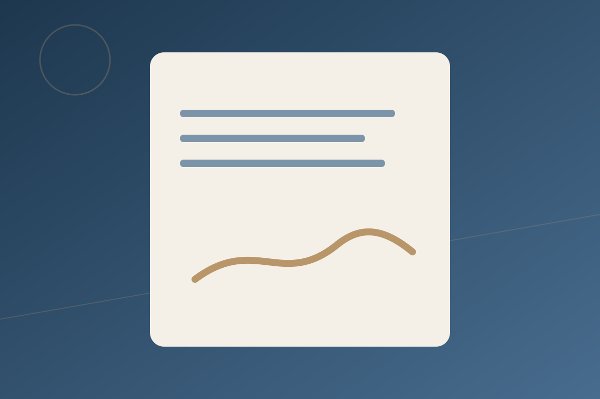
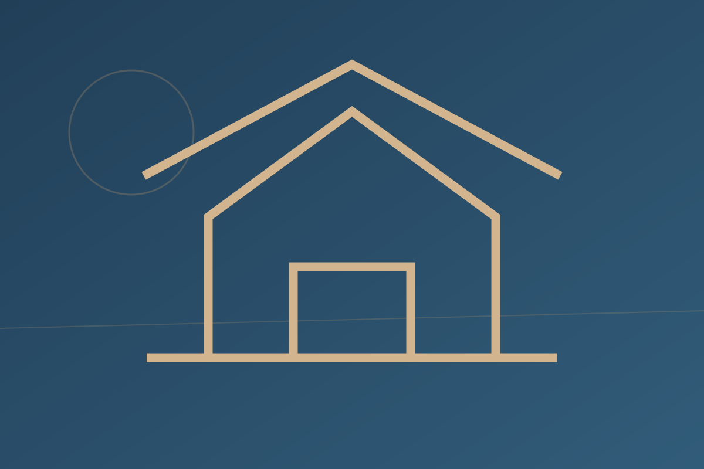

01+
Corporate & Company Law
Legal opinions, instruments, compliance processes, governance and commercial advisory.
Explore service ↗Corporate Advisory · Dispute Resolution · Technology & Media
Clear counsel. Commercial awareness. Modern legal thinking.
A Nairobi-based Advocate of the High Court of Kenya with experience in litigation, dispute resolution, compliance and corporate advisory, and a strong interest in capital markets, regional law and emerging technology.
Bobderek Mayaka is an Advocate of the High Court of Kenya with over five years of experience in litigation, dispute resolution, compliance and corporate advisory. His interests span company law, insurance, capital markets, EAC law, health law, land, constitutional and human rights law, and technology and media law.
A modern legal practice
A practical framework for personal growth, organisational development and sustainable outcomes.
02 / Services
Legal support for individuals, organisations, transactions and disputes across established and emerging areas of law.

Legal opinions, instruments, compliance processes, governance and commercial advisory.
Explore service ↗Litigation strategy, mediation and structured approaches to complex individual and organisational disputes.
Explore service ↗
Property transactions, due diligence, legal instruments and land-related advisory.
Explore service ↗Digital governance, AI, blockchain, virtual currency, media and emerging regulatory risk.
Explore service ↗Investment-facing legal issues, governance, regulatory awareness and corporate structures.
Explore service ↗Rights-focused legal analysis and advisory on constitutional, public-law and human-rights issues.
Explore service ↗03 / Our Advocate
Bobderek Mayaka is an Advocate of the High Court of Kenya with experience across litigation, dispute resolution, compliance and corporate advisory.
The advocate
Practical legal analysis, dispute-resolution thinking and commercially aware advisory.
04 / Why choose Bobderek
A practical approach grounded in preparation, commercial context, dispute strategy and clear communication.
Understand the law, the facts, the evidence and the practical objective.
Assess litigation, mediation and negotiation as parts of a complete dispute strategy.
Consider how legal choices affect organisations, transactions, reputation and investment.
A personal legal service built around clear communication and responsive engagement.
Identify duties and risk early, before they become disputes or regulatory problems.
Connect traditional legal principles with emerging technology, digital governance and media issues.
05 / Insights & Resources
06 / Experience & Credentials
Professional background supplied for this website concept.
Over five years in litigation, dispute resolution, compliance and corporate advisory.
LL.B. (Hons), Moi University; Post-Graduate Diploma in Law, Kenya School of Law.
Certified Professional Mediator — Mediation Training Institute, East Africa.
07 / Contact & Enquiries
Call or WhatsApp Bobderek to discuss your legal issue and the appropriate next step.